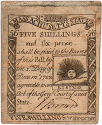
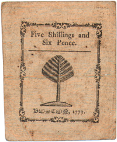

[front]
No. [23220]
Massachusetts State
5/6 FIVE SHILLINGS 5/6
and six-pence.
shall be paid to the Bearer
of this Bill by
the [ ] Day of
Decem"1782
agreeable to an
Act of the Gen[.] Court of said
State.
J. Brown
FIVE SHILLINGS [&] six-pence
1/6 G. Partridge } Comitee 1/6
|

[back]
Five Shillings and Six Pence
Boston October 1779
|